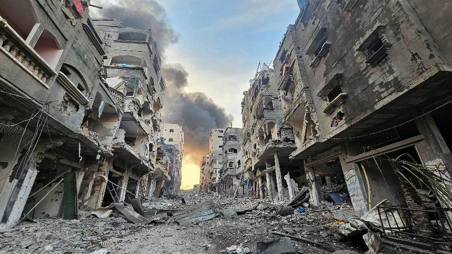
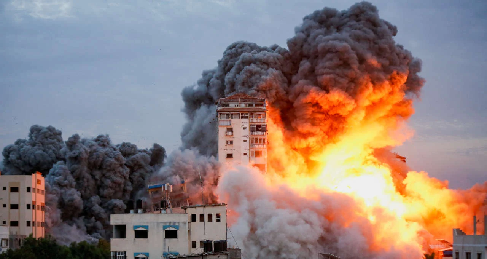
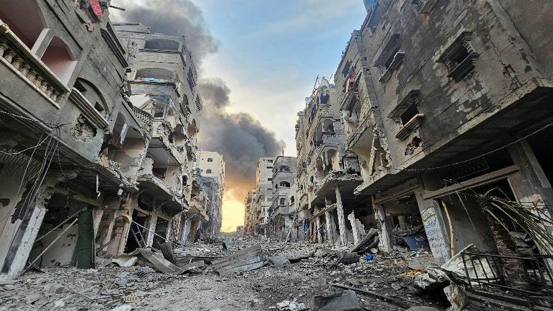
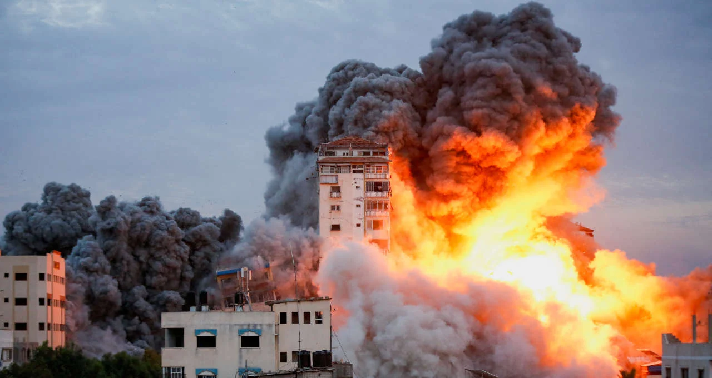

As Forças de Defesa de Israel disseram em comunicado nesta terça que usaram seu sistema de defesa aérea Arrow pela primeira vez para interceptar com sucesso um míssil que foi disparado da área do Mar Vermelho, o uso do sistema de defesa Arrow, projetado para interceptar mísseis de alta altitude, indica que os Houthis usaram um míssil mais avançado e de longo alcance em sua tentativa de ataque.
" Os conflitos entre Israel e Palestina remontam à primeira metade do século XX e foram iniciados pela disputa em torno do território palestino. Essa rivalidade se iniciou com o crescimento da população judia na Palestina e resultou em uma série de conflitos a partir de 1948. Israel afirma que suas ações são em defesa de sua própria população, e os palestinos acusam Israel de sustentar um regime de perseguição." (IDF) ampliaram a ofensiva terrestre na Faixa de Gaza e utilizaram dezenas de tanques de guerra em uma incursão perto do bairro de Al-Zeitun, na periferia leste da Cidade de Gaza.
O governo dos Estados Unidos afirmou que não apoia um cessar-fogo "neste momento". Para John Kirby, porta-voz do Conselho de Segurança Nacional, esta não seria "a resposta adequada neste momento".